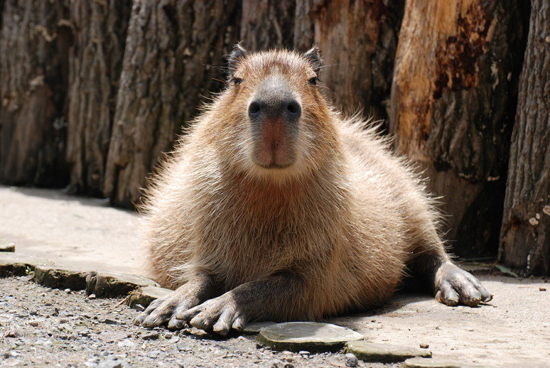

Капиба́ра, или водосви́нка(лат. Hydrochoerus hydrochaeris) — полуводное травоядное млекопитающее из семейства водосвинковых (Hydrochoeridae), один из двух (наряду с малой водосвинкой) ныне существующих видов рода водосвинки. Капибара — самый крупный среди современных грызунов.
Название животного берёт начало от слова ka'apiûara, что на мёртвом языке тупи (родственном языку индейцев гуарани) буквально означает «поедатель тонкой травы» (kaá (трава) + píi (тонкий) + ú (есть) + ara (суффикс, аналогичный русскому суффиксу -ель))[3][4]. В наиболее близкой к оригиналу форме capivara оно вошло в португальский язык и широко употребимо в Бразилии. Уже в форме capibara через испанский слово вошло в английский, русский, японский и ряд других языков. В испаноговорящих странах Латинской Америки также в ходу и другие названия, происходящие из языков местных индейцев: carpincho (Аргентина, Перу и др.), chigüiro (Венесуэла, Колумбия), jochi (Боливия), ñeque (Колумбия) и др. Научное название (как родовой, так и видовой эпитеты) Hydrochoerus hydrochaeris переводится как «водяная свинья» (др.-греч. ὕδωρ — вода + χοῖρος — свинья), калька с которого послужила основой как для альтернативного русского наименования этого животного — водосвинка, — так и названий его на китайском (水豚), венгерском (Vízidisznó), исландском (Flóðsvín) и некоторых других языках, а также для вариантов, употребимых в Аргентине (chancho de agua и puerco de agua).
Длина тела взрослой капибары достигает 1—1,35 м, высота в холке — 50—60 см. Самцы весят 34—63 кг, а самки — 36—65,5 кг (измерения произведены в венесуэльских льяносах)[5]. Самки, как правило, крупнее самцов. Телосложение тяжёлое. Внешне капибара напоминает гигантскую большеголовую морскую свинку. Голова крупная, массивная с широкой, тупой мордой. Верхняя губа толстая. Уши короткие, округлые. Ноздри широко расставлены. Глаза маленькие, расположены высоко на голове и отнесены несколько назад. Хвост рудиментарный. Конечности довольно короткие; передние — 4-палые (пальцев было шесть)[прояснить], задние — 3-палые. Пальцы соединены небольшими плавательными перепонками и снабжены короткими сильными когтями. Тело покрыто длинными (30—120 мм) и жёсткими волосами; подшёрсток отсутствует. Окрас верхней стороны тела от рыжевато-бурого до сероватого, брюшной, как правило, желтовато-бурый. Молодняк окрашен светлее. У половозрелых самцов на верхней части морды расположен участок кожи с многочисленными крупными сальными железами. У самок имеется 6 пар брюшных сосков. Череп массивный, с широкими и сильными скуловыми дугами. Зубов 20. Щёчные зубы без корней, растут в течение всей жизни животного. Резцы широкие, имеют продольную бороздку на наружной поверхности[5]. Малая и большая берцовые кости частично срастаются между собой. Ключицы нет. Хромосом в диплоидном наборе 66.
| Домен: | Эукариоты |
| Царство: | Животные |
| Тип: | Хордовые |
| Класс: | Млекопитающие |
| Отряд: | Грызуны |
| Семейство: | Свинковые |
| Род: | Капибара |